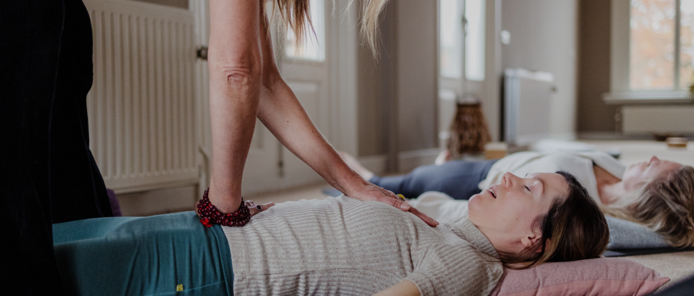

Stap voor stap terug naar balans
uit 'De kracht van rust- Mirjam van de Vegt-
Overspannenheid, stress en burnout hebben vele gezichten.
Een op de 5 Nederlanders geeft aan last te hebben van een burnout of van verschijnselen van overspannenheid of overwerkt te zijn. Dit ontstaat niet in een keer maar is het gevolg van een zenuwstelsel dat te lang onder druk heeft gestaan.
Te veel prikkels, te veel verantwoordelijkheid, teveel aanpassen, langdurig over je grenzen heengaan bij bijvoorbeeld een hoge werkdruk, spanningen in de persoonlijke sfeer of als meerdere dingen tegelijkertijd spelen – werk en levensstress – het gevoel van "always on, never done". Er zijn dan te weinig momenten waarop het systeem echt kan herstellen.
Je lichaam is ongezond geworden door een langdurige hoeveelheid chronische stress en je brein draait op reserves. Een goed en veilig begeleidingstraject is dan cruciaal om uit deze 'stress'koker te komen.

Je leert hoe je je lichaam, geest, emoties en zingeving in balans kunt brengen. Cognitieve gespreks- en lichaamsgerichte technieken helpen je daarbij. Ook wordt ademwerk ingezet, omdat het een van de krachtigste ingangen is naar rust, herstel en helderheid.
Je leert accepteren wat er is, zorgen voor jezelf, prioriteiten stellen, loslaten wat je niet kunt controleren en verantwoordelijkheid nemen voor je gezondheid. Je gaat oefenen met het herstellen van het contact met je lichaam met ademwerk, beweging en lichaamsbewustzijn.
In deze fase wordt gekeken naar de dieperliggende oorzaken van het vastlopen van je overlevingsmechanisme. Je werkt aan het doorbreken van diep verankerde patronen, het aankijken van je angst, doorvoelen van pijn, transformatie en onderzoeken van systemische herhalingen.
Hoe kun je jezelf blijven in verschillende situaties, zoals op je werk of thuis. Hoe ga je om met de veranderingen die je hebt doorgemaakt. Wat heb je nodig om goed voor jezelf te blijven zorgen. Hoe voorkom je dat je terugvalt in oude patronen.
Bij teveel en te langdurige stress maakt het lichaam cortisol (stresshormoon) aan, wat zorgt voor een uitgeput en ontregeld lichaam. Dit leidt tot fysieke klachten zoals een snelle onregelmatige vaak hoge ademhaling, gewichtstoename, een minder goed werkend immuunsysteem, slechter slapen, concentratieproblemen, minder impulscontrole en stemmingswisselingen.
Om mentaal en fysiek in balans te komen is "bewust werken" aan een verbeterde ademhaling en ontspanning het allerbelangrijkste. Yoga, stress release, ontspanningsoefeningen, ademwerk en mindfulness (leren omgaan met de drukte in je hoofd) helpen dan om het parasympatisch zenuwstelsel te activeren. Dat is dat deel van het lichaam dat zorgt dat je weer tot rust kan komen, kan ontspannen, goed kan slapen en zo energie opdoet!
Daarna volgen fase 1,2 en 3. Met geduld en acceptatie voor wat is, kijken we ieder gesprek wat nodig is.
Het aantal gesprekken ligt rond de 8-10. Een gesprek is anderhalf uur.
| Aantal gesprekken | 8-10 |
|---|---|
| Duur | anderhalf uur |
Huiswerkopdrachten en oefeningen worden meegegeven om inzicht te krijgen in gedrag en handelen en voortgang te monitoren.
Mocht je meer informatie over mijn werkwijze willen voor je werkgever, neem dan contact op. Ik denk graag met je mee en kan een offerte toesturen.
Indien je een afspraak moet afzeggen of verzetten, dan verzoek ik je dit minimaal 24 uur van tevoren door te geven. Afspraken die binnen 24 uur voor de geplande tijd worden afgezegd, zullen volledig in rekening worden gebracht.
Bij iedere les of sessie is het mijn doel om mensen een gevoel van ’thuis komen’ te geven. Heb je een vraag of wil je een afspraak maken? Neem gerust contact met mij op.